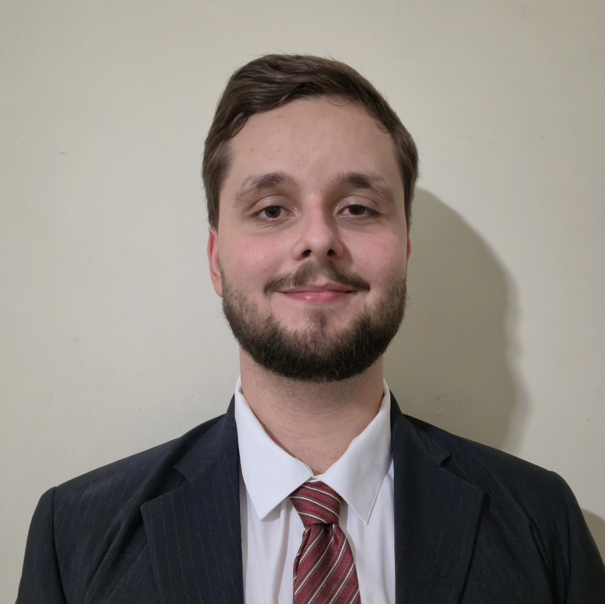

I am a computational physicist and PhD student in Experimental and Theoretical Physics at IFSC-USP, funded by FAPESP. My research focuses on metasurfaces, nanophotonics, and light–matter interaction, combining electromagnetic simulations with machine learning techniques such as Deep Neural Networks (DNNs) and Physics-Informed Neural Networks (PINNs) for the inverse design of photonic structures.
Feel free to contact me via email: vinicius@email.com